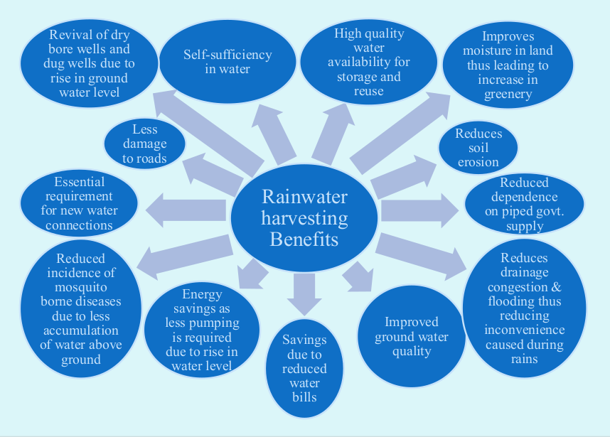
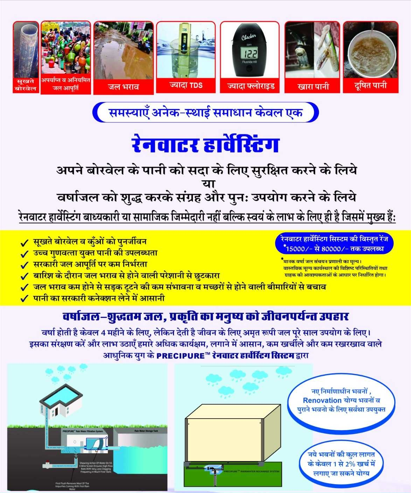

<section id="portfolio" class="installation-services portfolio section-header">
  <!-- <div class="container" data-aos="fade-up">
    <div class="section-header">
      <h2>Benefits</h2>
    </div>

    <div class="portfolio-isotope" data-portfolio-filter="*" data-portfolio-layout="masonry" data-portfolio-sort="original-order">

      <div class="row gy-4 portfolio-container" data-aos="fade-up" data-aos-delay="300">

        
        <div class="col-md-12 portfolio-item text-center filter-app">
          <a href="assets/img/jwh_benefits.png" data-gallery="portfolio-gallery-app" class="glightbox preview-link">

            
          </a>
        </div>
        <div class="col-md-6 portfolio-item filter-app align-items-center">
          <a href="assets/img/benefits.jpg" data-gallery="portfolio-gallery-app" class="glightbox preview-link">

            
          </a>
        </div>
        
      </div>

    </div>

  </div> -->
  <div class="container text-start" data-aos="fade-up">

    <div class="content ps-lg-5">
      <div class="section-header">
        <h2>
          Rainwater Harvesting Benefits
        </h2>
      </div>
      <!-- <br>
      <h5 id="wall-mountable-rainwater-filter">
        <i> Rainwater harvesting Benefits  </i>
      </h5> -->

      <br>
      <div class="container">
        <div class="row">
          <div class="col">

            <ul>
              <li><i class="bi bi-check-circle-fill"></i> Revival of dry bore wells and dug wells due to rise in ground water level </li>
              <li><i class="bi bi-check-circle-fill"></i> Self-sufficiency in water </li>
              <li><i class="bi bi-check-circle-fill"></i> High quality water availability for storage and reuse </li>
              <li><i class="bi bi-check-circle-fill"></i> Improves moisture in land thus leading to increase in greenery </li>
              <li><i class="bi bi-check-circle-fill"></i> Essential requirement for new water connections </li>
              <li><i class="bi bi-check-circle-fill"></i> Reduced incidence of mosquito borne diseases due to less accumulation of water above ground </li>
              <li><i class="bi bi-check-circle-fill"></i> Less damage to roads </li>
              <li><i class="bi bi-check-circle-fill"></i> Reduce soil erosion </li>
              <li><i class="bi bi-check-circle-fill"></i> Rainwater harvesting Benefits </li>
              <li><i class="bi bi-check-circle-fill"></i> Energy savings as less pumping is required due to rise in water level </li>
              <li><i class="bi bi-check-circle-fill"></i> Savings due to reduced water bills </li>
              <li><i class="bi bi-check-circle-fill"></i> Reduced dependence on piped govt. supply </li>
              <li><i class="bi bi-check-circle-fill"></i> Reduces drainage congestion & flooding thus reducing inconvenience caused during rains </li>
            </ul>
          </div>
          
        </div>
      </div>     
    </div>

  </div>
</section>